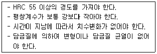
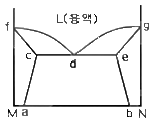

침투비파괴검사기능사 (2013-07-21 기출문제)
1과목: 침투탐상시험법(대략구분)
1. 자화전류와 자분의 관계에서 표면하결함 검출에 좋은 조합은 다음 중 무엇인가?
- 교류 - 습식자분
- 교류 – 건식자분
- 반파직류 – 습식자분
- 반파직류 – 건식자분
(정답률: 33%)

2. 자분탐상시험법에 사용되는 시험 방법이 아닌 것은?
- 축 통전법
- 직각 통전법
- 프로드법
- 단층 촬영법
(정답률: 78%)
3. 침투탐상검사로 검출이 어려운 결함은?
- 언더컷
- 오버랩
- 피로균열
- 슬래그 혼입
(정답률: 75%)
4. 자분탐상시험으로 고리모양의 제품을 탐상할 때 가장 좋은 자화방법은?
- 프로법
- 극간법
- 축통전법
- 전류관통법
(정답률: 36%)
5. 기계나 구조물을 설계할 때 부재의 치수, 형상, 재료의 적부를 판단하거나, 제작된 기계나 구조물이 사용 중 파손 및 변형되지 않도록 감시하는데 이용되는 비파괴검사법은?
- 음향방출 시험
- 응력스트레인 측정
- 전위치 시험
- 적외선 서모그래피
(정답률: 65%)
6. 어떤 물체의 온도가 56°C였다. 이를 화씨(°F)로 전환하면 얼마인가?
- 약 132°F
- 약 13°F
- 1.3°F
- 약 17°F
(정답률: 73%)
7. 초음파탐상시험에 대한 설명 중 틀린 것은?
- 오스테나이트강에서는 종파에 비해 횡파에 경우 감쇠가 크다.
- 시험체의 결정입계에서 탄화물을 석출하면 산란감쇠가 증가한다.
- 오스테나이트강에서는 횡파는 때때로 주상정의 성장 방향에 따라 진행한다.
- 스테인리스강 재질은 탄소강 재질과 초음파속도가 같으므로 대비시험편은 어느 것을 사용하여도 무방하다.
(정답률: 67%)
8. 누설검사에서 추적가스로 사용할 수 없는 것은?
- 수소
- 할로겐
- 헬륨
- 암모니아
(정답률: 64%)
9. 침투탐상검사에 대한 설명 중 틀린 것은?
- 표면균열 검사에 효과적이다.
- 시험품 표면온도가 검사결과에 영향을 준다.
- 구조물의 부분탐상에는 후유화법이 효과적이다.
- 철, 비철 등 금속제품 검사에 효과적이다.
(정답률: 66%)
10. 와전류탐상시험에서 검사 코일의 임피던스 변화에 미치는 영향이 제일 작은 인자는?
- 시험속도
- 시험주파수
- 시험체의 전도율
- 시험체의 투자율
(정답률: 53%)
11. 방사선작업 종사자가 착용하는 개인피폭 선량계에 속하지 않는 것은?
- 서베이미터
- 필름배지
- 포켓도시미터
- 열형광선량계
(정답률: 56%)
12. 비파괴검사에 대한 일반적인 설명으로 틀린 것은?
- 자분탐상시험은 표면결함 검출에 적용된다.
- 초음파탐상시험은 작업자의 숙련도에 크게 좌우된다.
- 침투탐상시험은 강자성체에만 적용할 수 있다.
- 방사선투과시험은 검사체 내부결함 검출에 유용하다.
(정답률: 82%)
13. 내부 기공의 결함 검출에 가장 적합한 비파괴검사법은?
- 음향방출시험
- 방사선투과시험
- 침투탐상시험
- 와전류탐상시험
(정답률: 70%)
14. 초음파탐상법을 원리에 의해 분류할 때 해당하지 않는 것은?
- 펄스반사법
- 투과법
- A-주사법
- 공진법
(정답률: 70%)
15. 침투탐상검사에서 침투에 영향을 미치는 요인은?
- 검사 대상물의 크기
- 결함의 방향성
- 검사 대상물의 화학성분
- 결함의 폭
(정답률: 53%)
16. 다음 중 접촉각만의 관점에서 볼 때 적심성이 가장 좋은 침투액은?
- 접촉각이 10° 인 침투액
- 접촉각이 30° 인 침투액
- 접촉각이 45° 인 침투액
- 접촉각이 90° 인 침투액
(정답률: 64%)
17. 염색 침투 비파괴검사에 가장 적합한 조명은?
- 20 룩스 이하
- 20 룩스 부터 30 룩스 사이
- 500 룩스 이상
- 100W/m2
(정답률: 62%)
18. 침투탐상시험시 침투액이 가져야 할 특성이 아닌 것은?
- 미세한 틈 사이에도 침투할 수 있는 능력
- 침투처리시 비교적 큰 결함에도 남을 수 있는 능력
- 침투처리시 재빨리 증발할 수 있는 능력
- 후처리시에 표면으로부터 쉽게 씻겨질 수 있는 능력
(정답률: 82%)
19. 침투탐상시험시 형광침투액과 비교했을 때 염색침투액의 장점 설명으로 옳은 것은?
- 작은 지시들을 더 잘 볼 수 있다.
- 크롬산 표면에 사용할 수 있다.
- 거친 표면에 대조색이 적다.
- 특별한 조명장치를 필요로 하지 않다.
(정답률: 79%)
20. 형광침투탐상시험을 할 때 과잉침투제를 제거한 직후 행하여야할 사항으로 옳은 것은?
- 표면을 압축공기로 불어 건조시킨다.
- 흡수지를 사용하여 표면에 남아 있는 액체를 빨아낸다.
- 자외선등으로 과잉 침투액이 제거되었는가 점검한다.
- 열풍식 건조기로 표면을 건조시킨다.
(정답률: 76%)
2과목: 침투탐상관련규격(대략구분)
21. 형광침투탐상시험에 사용되는 자외선 조사장치에 장시간 노출되었을 때 가장 먼저 장해를 받는 것은?
- 인체 근육조직
- 인체의 염색체
- 인체 혈관세포
- 인체의 눈
(정답률: 81%)
22. 침투의 원리에서 액체분자 사이의 응집력은 액체가 스스로 수축하여 표면적을 가장 작게 가지려고 하는 힘을 표현한 것은?
- 표면장력
- 모세관현상
- 적심성
- 접촉각
(정답률: 64%)
23. 침투탐상시험에서 현상제가 갖추어야 할 조건으로 옳은 것은?
- 휘발성이 높아야 한다.
- .세척성이 좋아야 한다.
- 침투성이 좋아야 한다.
- 침투액의 분산력이 좋아야 한다.
(정답률: 53%)
24. 다음 중 침투제의 침투력에 영향을 주는 요인으로 틀린 것은?
- 개구부의 표면에 열려진 크기
- 침투제의 표면장력
- 침투제의 적심성
- 시험체의 재질
(정답률: 63%)
25. 의사지시모양은 현상제를 적용한 면에 어떤 것이 남아있을 경우 나타날 가능성이 가장 높은가?
- 침투액
- 세척액
- 유화액
- 트리클렌
(정답률: 62%)
26. 주조품에서 수축균열이 발생하는 부위는 주로 어느 곳인가?
- 얇은 부재 쪽
- 두꺼운 부재 쪽
- 두께 변화가 심한 곳
- 주물 내부의 기공이 있는 곳
(정답률: 54%)
27. 탐상제 중에 염색침투액보다 형광침투액이 좋은 점은?
- 일반 광선으로 검사할 수 있다.
- 작은 지시라도 쉽게 검출 가능하다.
- 물이 묻은 부품에 사용이 용이하다.
- 자외선등을 이용하므로 장비가 단순, 간편하다.
(정답률: 70%)
28. 침투탐상 시험방법 및 침투지시모양의 분류(KS B 0816)에서 일반 주강품에 대해 형광침투탐상할 때 관찰에 필요한 자외선의 강도는?
- 25cm 거리에서 1000W/cm2 이상
- 25cm 거리에서 800W/cm2 이상
- 시험체 표면에서 500μw/cm2 이상
- 시험체 표면에서 800μw/cm2 이상
(정답률: 73%)
29. 침투탐상 시험방법 및 침투지시모양의 분류(KS B 0816)에서 강용접부 시험체와 침투액의 온도가 22°C 일 때 표준 현상시간은?
- 2분
- 5분
- 7분
- 15분
(정답률: 70%)
30. 배관 용접부의 비파괴시험 방법(KS B 0888)에서 도관의 일반 부분인 경우 침투탐상시험에 대한 지시모양의 분류 및 합격판정 기준으로 옳은 것은?
- 독립침투지시모양은 독립하여 존재하는 개개의 침투지시모양으로 3종류로 구분한다.
- 연속침투지시모양의 길이는 침투지시모양의 개개의 길이 및 상호의 간격을 더한 값으로 한다.
- 독립침투지시모양 및 연속침투지시모먕은 1개의 길이 10mm 이하를 합격으로 한다.
- 분산침투지시모양은 연속된 용접길이 500mm 당의 합계점이 10점 이하인 경우를 합력으로 한다.
(정답률: 47%)
31. 침투탐상 시험방법 및 침투지시모양의 분류(KS B 0816)에 따른 현상제의 적용방법 중 열풍 순환식 건조기를 사용하지 않는 것은?
- 수용성 현상제
- 물 현탁성 현상제
- 습식 현상제
- 건식 현상제
(정답률: 56%)
32. 항공우주용 기기의 침투탐상 검사방법(KS W 0914)에서 염색침투 탐상장치의 관찰 장소의 백색광 조도는?
- 최소 100 lx 이하
- 최소 100 lx 이상
- 최소 1000 lx 이하
- 최소 1000 lx 이상
(정답률: 51%)
33. 침투탐상 시험방법 및 침투지시모양의 분류(KS B 0816)에 규정된 B형 대비시험편의 종류 기호가 아닌 것은?
- PT-B10
- PT-B20
- PT-B40
- PT-B50
(정답률: 77%)
34. 침투탐상 시험방법 및 침투지시모양의 분류(KS B 0816)에 의한 시험방법의 분류 중 수용성 습식현상법을 사용할 때의 기호는?
- B
- A
- D
- C
(정답률: 69%)
35. 항공우주용 기기의 침투탐상 검사방법(KS W 0914)에서 적용하는 침투액계의 타입에 대한 설명으로 옳지 않은 것은?
- 타입 Ⅰ : 형광 침투액 계통
- 타입 Ⅱ : 염색 침투액 계통
- 타입 Ⅲ : 염색과 형광 복식 침투액 계통
- 타입 Ⅳ : 후유화 염색 형광 복식 침투액 계통
(정답률: 51%)
36. 침투탐상 시험방법 및 침투지시모양의 분류(KS B 0816)에서 규정한 A형 대비시험편의 크기와 대비시험편의 홈의 깊이로 옳은 것은?
- 크기 : 75×50mm, 홈의 깊이 : 1.5mm
- 크기 : 75×50mm, 홈의 깊이 : 2mm
- 크기 : 100×75mm, 홈의 깊이 : 1.5mm
- 크기 : 100×75mm, 홈의 깊이 : 2mm
(정답률: 58%)
37. 침투탐상 시험방법 및 침투지시모양의 분류(KS B 0816)에서 B형 대비 시험편 제작시 규정하는 재료로 틀린 것은?
- C2024P
- C2600P
- C2720P
- C2801P
(정답률: 70%)
38. 항공우주용 기기의 침투탐상 검사방법(KS W 0914)의 방법 B에 따라 친유성 유화제를 시편에 적용하려 한다. 설명으로 틀린 것은?
- 침지법에 의해 적용해야 한다.
- 흘림에 의해 적용해야 한다.
- 붓칠을 이용하여 적용한다.
- 적용 중 교반은 불허한다.
(정답률: 54%)
39. 침투탐상 시험방법 및 침투지시모양의 분류(KS B 0816)에 의한 시험분류 방법 중 “후유화성 형광침투액 수현탁성 현상제”의 표시는?
- FB-W
- FB-A
- VB-W
- VB-A
(정답률: 80%)
40. 배관 용접부의 비파괴시험 방법(KS B 0888)에서 규정하는 지그부착자국에 대한 침투탐상시험에서 시험의 최소실시 범위는?
- 지그부착자국 주변에서 그 외부로 5mm의 길이를 더한 범위로 한다.
- 지그부착자국 주변에서 그 외부로 10mm의 길이를 더한 범위로 한다.
- 관의 살두께를 주변에 더한 범위로 한다.
- 관의 살두께의 1/2인 길이를 주변에 더한 범위로 한다.
(정답률: 36%)
3과목: 금속재료일반 및 용접일반(대략구분)
41. 침투탐상 시험방법 및 침투지시모양의 분류(ks b 0816)에 따른 침투탐상시험에서 시험보고서에 시험장소에서의 기온 및 침투액의 온도를 기록하지 않아도 좋은 경우는?
- 15°C 이하일 때
- 15°C ~ 50°C 일 때
- 50°C 이상일 때
- 80°C 이상일 때
(정답률: 84%)
42. 침투탐상 시험방법 및 침투지시모양의 분류(KS B 0816)에서 시험방법 중 후유화성 형광침투액(기름베이스 유화제)-수현탁성 습식현상제를 사용하였을 때 유화처리 후 다음 단계에 수행하여야 하는 처리 방법은?
- 세척처리
- 침투처리
- 건조현상처리
- 습식현상처리
(정답률: 60%)
43. 구조용특수강 중 Cr-Mo강에서 Mo의 역할 중 가장 옳은 것은?
- 내식성을 향상시킨다.
- 산화성을 향상시킨다.
- 절삭성을 양호하게 한다.
- 뜨임 취성을 없앤다.
(정답률: 49%)
44. 다음 보기의 성질을 갖추어야 하는 공구용 합금강은?

- 게이지용 강
- 내충격용 공구강
- 절삭용 합금 공구강
- 열간 금형용 공구강
(정답률: 60%)
45. 다음 중 용융금속이 가장 늦게 응고하여 불순물이 가장 많이 모이는 부분은?
- 금속의 모서리 부분
- 결정 입계 부분
- 결정 입자 중심 부분
- 가장 먼저 응고하는 금속 표면 부분
(정답률: 44%)
46. 60%Cu – 40%Zn 황동으로 복수기용 판, 볼트, 너트 등에 사용되는 합금은?
- 톰백
- 길딩메탈
- 문쯔메탈
- 애드미럴티메탈
(정답률: 66%)
47. 로크웰 경도를 시험할 때 처음 기준하중은 몇 kgf으로 하는가?
- 5
- 10
- 30
- 50
(정답률: 58%)
48. 주철의 물리적 성질은 조작과 화학 조성에 따라 크게 변화한다. 주철을 600°C 이상의 온도에서 가열과 냉각을 반복하면 주철이 성장한다. 주철 성장의 원인으로 옳은 것은?
- 시멘타이트(cecentite)의 흑연화로 발생한다.
- 균일 가열로 인하여 발생한다.
- 니켈의 산화에 의한 팽창으로 발생한다.
- A4 변태로 인한 부피 팽창으로 발생한다.
(정답률: 65%)
49. 다음 중 내식성 알루미늄(Al) 합금이 아닌 것은?
- 하스텔로이
- 하이드로날륨
- 알클래드
- 알드리
(정답률: 55%)
50. 금속에 열을 가하여 액체 상태로 한 후에 고속으로 급랭하면 원자가 규칙적으로 배열되지 못하고 액체 상태로 응고되어 고체 금속이 되는데, 이와 같이 원자들의 배열이 불규칙한 상태의 합금을 무엇이라 하는가?
- 비정질 합금
- 형상 기억 합금
- 제진 합금
- 초소성 합금
(정답률: 84%)
51. 다음 중 초경합금과 관계가 없는 것은?
- TiC
- WC
- Widia
- Lautal
(정답률: 61%)
52. 다음 상태도에서 액상선을 나타내는 것은?

- acf
- cde
- fdg
- beg
(정답률: 73%)
53. 주물용 마그네슘(Mg) 합금을 용해할 때 주의해야 할 사항으로 틀린 것은?
- 주물 조각으 사용할 때에는 모래를 투입하여야 한다.
- 주조조직의 미세화를 위하여 적절한 용탕온도를 유지해야 한다.
- 수소가스를 흡수하기 쉬우므로 탈가스 처리를 해야 한다.
- 고온에서 취급할 때는 산화와 연소가 잘되므로 산화 방지책이 필요하다.
(정답률: 62%)
54. 다음 중 2500°C 이상의 고용융점을 가진 금속이 아닌 것은?
- Cr
- W
- Mo
- Ta
(정답률: 47%)
55. T.T.T 곡선에서 하부 임계냉각 속도란?
- 50% 마텐자이트를 생성하는데 요하는 최대의 냉각속도
- 100% 오스테나이트를 생성하는데 요하는 최소의 냉각속도
- 최초에 소르바이트가 나타나는 냉각속도
- 최초에 마텐자이트가 나타나는 냉각속도
(정답률: 57%)
56. 다음 중 니켈 황동에 대한 설명으로 옳은 것은?
- 양은 또는 양백이라 한다.
- 5:5 황동에 Sn 첨가한 합금을 니켈 황동이라 한다.
- Zn 이 30% 이상이 되면 냉간가공성이 좋아진다.
- 스크루, 시계톱니 등과 같은 제품의 재로로 사용한다.
(정답률: 51%)
57. 강의 서브제로 처리에 관한 설명으로 틀린 것은?
- 퀜칭 후의 잔류오스테나이트를 마텐자이트로 변태 시킨다.
- 냉각제는 ‘드라이아이스 + 알콜’이나, ‘액체질소’를 사용한다.
- 게이지, 베어링, 정밀금형 등의 경년변화를 방지할 수 있다.
- 퀜칭 후 실온에서 장시간 방치하여 안정화시킨 후 처리하면 더욱 효과적이다.
(정답률: 51%)
58. 용접법 중 열원으로 미세한 금속 분말의 반응열을 이용하여 용접하는 방식은?
- 플라즈마 용접
- 테르밋 용접
- 프로젝션 용접
- 불활성가스 아크 용접
(정답률: 72%)
59. 피복 아크 용접에서 아크 전류 150A, 아크 전압 30V이고, 용접 속도가 10cm/min일 때, 용접 입열은 J/cm 인가?
- 2700
- 27000
- 270000
- 2700000
(정답률: 69%)
60. 용해 아세틸렌 취급시 주의사항으로 틀린 것은?
- 용기는 수평으로 놓은 상태에서 사용한다.
- 저장실의 전기 스위치는 방폭 구조로 한다.
- 토치 불꽃에서 가연성 물질을 가능한 한 멀리한다.
- 용기 운반 전에 밸브를 꼭 잠근다.
(정답률: 59%)